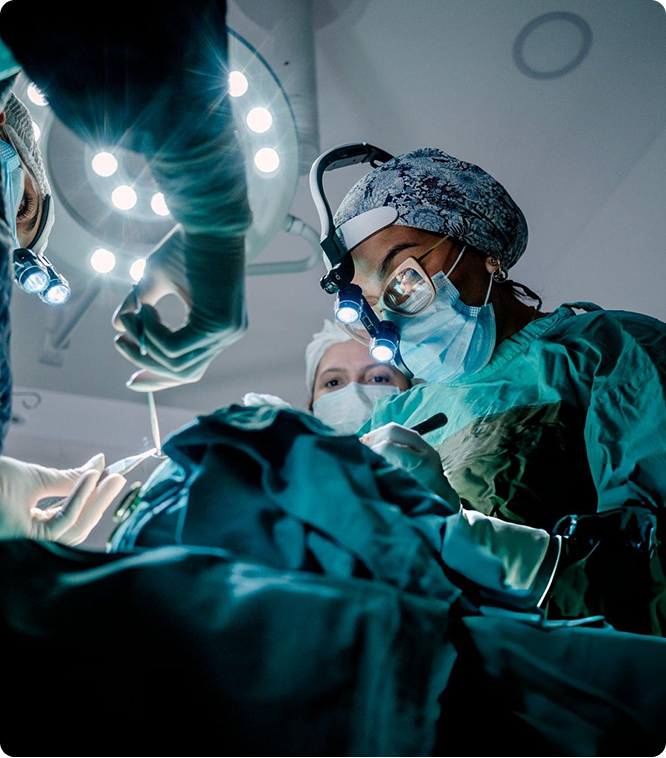
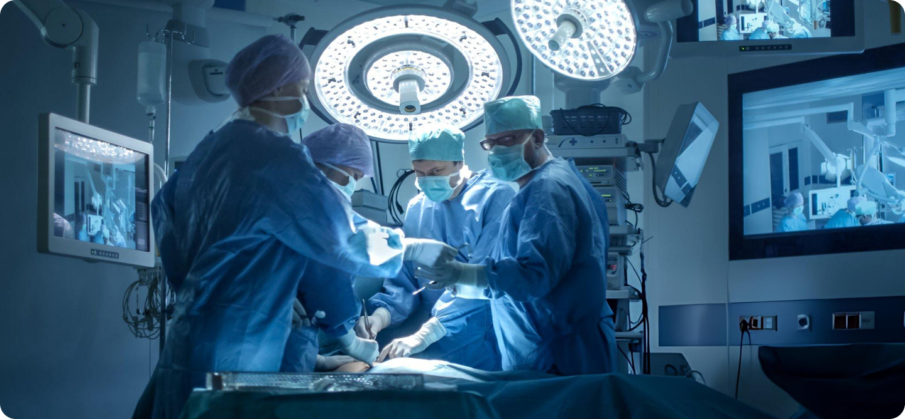

Nebraska Teleradiology Services
TopRad provides Nebraska hospitals with ABR-certified teleradiology. Rapid 24/7 ER coverage & subspecialty reads tailored for Lincoln, Omaha, & rural CAHs.
TopRad provides Nebraska hospitals with ABR-certified teleradiology. Rapid 24/7 ER coverage & subspecialty reads tailored for Lincoln, Omaha, & rural CAHs.
In the evolving landscape of Nebraska healthcare, the divide
between the high-volume urban centers of Omaha and Lincoln and the
essential Critical Access Hospitals (CAHs) across the Sandhills
and the Panhandle creates a unique set of diagnostic challenges.
Hospital COOs and Radiology Directors across the Cornhusker State
face a common pressure: maintaining 24/7 diagnostic excellence
while grappling with a national shortage of on-site radiologists.
TopRad provides a clinical bridge. We deliver **Nebraska
teleradiology services** that combine the rigorous standards of
the **Nebraska Board of Medicine and Surgery** with the speed and
precision of **ABR-certified teleradiology Nebraska** specialists.
Our mission is to ensure that a patient in a 25-bed facility in
Valentine receives the same level of subspecialty expertise as a
patient at a major academic center in Omaha.

Navigating the regulatory environment in Nebraska requires more
than just clinical skill; it requires a deep understanding of
the Nebraska Medical Practice Act and the administrative
requirements set forth by the Nebraska Department of Health and
Human Services (DHHS).
At TopRad, we prioritize compliance and credentialing to ensure
seamless integration with your medical staff bylaws.
For Nebraska Radiology Directors, this means a significant reduction in administrative burden. We handle the rigorous vetting processes, allowing you to focus on internal workflow and patient experience.
Nebraska’s geography is defined by its vastness. With over 60 Critical Access Hospitals serving rural populations, the "distance to care" is a critical metric. When a trauma occurs on I-80 or a farmer in Scottsbluff presents with an acute neurological event, time is the most valuable commodity.
Emergency departments across Nebraska, from Kearney to South Sioux City, require instantaneous diagnostic support. Our ER radiology coverage Nebraska is designed to meet the most stringent "Time-to-Report" (TTR) requirements. We specialize in.

Providing rapid interpretation for high-velocity impact injuries and complex fractures.
Minutes saved in a CT Head or CTA interpretation directly translate to saved brain tissue. TopRad aligns with Nebraska’s "Coverdell Stroke Program" initiatives to improve outcomes in rural areas.
Fast, definitive diagnoses for appendicitis, bowel obstructions, and aortic aneurysms.

Burnout among on-site radiologists is a primary concern for
Nebraska Hospital COOs. By implementing nighthawk teleradiology
Nebraska services, you can provide your local staff with the
relief they need while maintaining a 24-hour standard of care.
Our nighthawk services are not just "after-hours" coverage; they
are full-service clinical extensions of your department, active
while Nebraska sleeps.
TopRad provides world-class MRI interpretation services Nebraska facilities can rely on for complex cases. Our subspecialty-trained radiologists offer expertise in:
Detailed evaluation of neurodegenerative
diseases, MS, and brain tumors.
Nebraska is a state of active individuals, from collegiate athletes in Lincoln to agricultural workers. We provide expert reads on sports injuries, ligamentous tears, and complex orthopedic pathologies.
By utilizing TopRad’s subspecialty bench, a community hospital in Grand Island can market high-end MRI services, knowing their scans are being read by the same experts who service major metropolitan hubs.
Nebraska’s climate—ranging from severe winter blizzards to
spring tornado seasons—can physically isolate medical
facilities. During such events, the local radiologist may be
unable to reach the hospital, or the sheer volume of emergency
cases may overwhelm the local staff.
TopRad’s cloud-based infrastructure ensures that the diagnostic
pipeline remains open regardless of local weather conditions.
Our redundant systems and secure VPN tunnels ensure that imaging
data flows from your facility to our ABR-certified physicians
without interruption.
Furthermore, we address the "brain drain" often felt in rural
Nebraska. By providing remote access to high-tier radiology, we
help CAHs remain competitive, preventing the need for patients
to be transferred to Omaha or Lincoln simply because an expert
interpretation wasn't available locally.
We understand that for a Radiology Director, the biggest hurdle to adopting a new teleradiology partner is the IT integration. TopRad utilizes a "Low-Friction, High-Security" approach:
Our systems integrate with all major PACS and RIS platforms used in Nebraska, including EPIC, Cerner, and Meditech.
Our physicians utilize advanced AI-assisted diagnostic tools to increase accuracy and catch subtle findings that generalist reads might miss.
TopRad is not a "black box." Our radiologists are available for direct consultation with your referring physicians, fostering a collaborative clinical environment.
In accordance with Nebraska DHHS standards and Joint Commission requirements, TopRad maintains a robust Quality Assurance program. We conduct regular internal peer reviews and provide transparent reporting to our Nebraska partners. This commitment to clinical data ensures that your facility maintains its accreditation and continues to deliver top-tier patient outcomes.
For Hospital COOs and Radiology Directors, the choice of a
teleradiology partner is a strategic decision that impacts both the
balance sheet and the patient’s bedside. TopRad offers a
physician-led model that prioritizes Nebraska’s clinical needs, from
the urban corridors to the most remote ranching communities.
Whether you need to fill a temporary gap in your schedule, provide
specialized MRI interpretation services Nebraska, or establish a
comprehensive nighthawk teleradiology Nebraska solution, TopRad
delivers ABR-certified excellence with a local focus.
Elevate your diagnostic capabilities and provide your patients with the specialized care they deserve. Contact our Nebraska clinical liaison today to discuss a customized teleradiology solution for your facility.